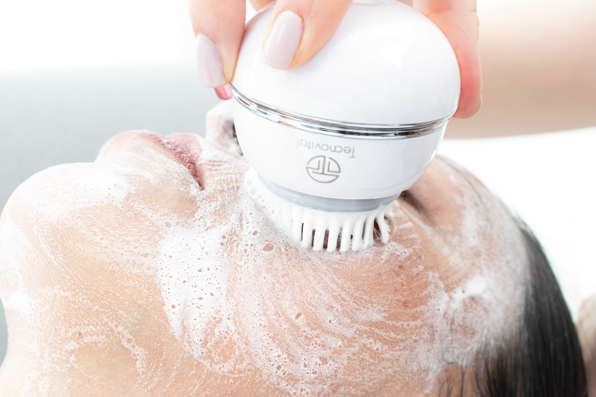
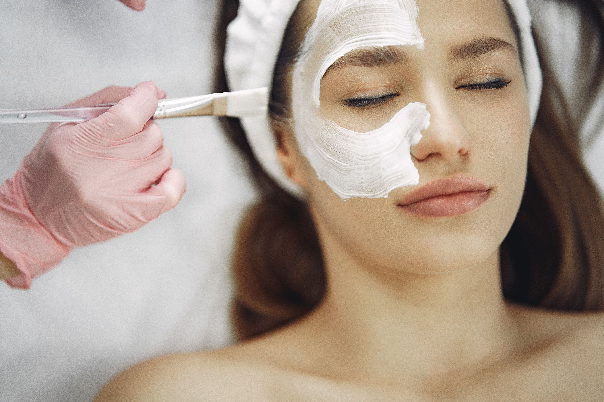

En los últimos años, los peelings faciales se han popularizado hasta el punto de que muchas personas los asocian, erróneamente, con un simple exfoliante que se puede replicar en casa con productos de venta libre o incluso con ingredientes caseros. Ácidos en formato cosmético, kits de "peeling casero" vendidos en redes sociales, recetas caseras con bicarbonato, limón o azúcar... la oferta es enorme, y la promesa siempre es la misma: piel renovada, luminosa y sin imperfecciones, sin salir de casa.
La realidad es bastante más compleja. Un peeling facial realizado en una clínica médico estética y un exfoliante casero pueden compartir la palabra "peeling" en el nombre, pero no tienen nada que ver en cuanto a composición, profundidad de acción, seguridad ni resultados. Entender esta diferencia no es solo una cuestión de marketing: puede evitar quemaduras, manchas, irritaciones prolongadas y daños en la barrera cutánea que, en algunos casos, tardan meses en repararse.
En la clínica médico estética de Alicia Forcada llevamos años trabajando con peelings profesionales adaptados a cada tipo de piel, y por eso creemos importante explicar, con honestidad, qué diferencia a un tratamiento en clínica de una exfoliación casera, y por qué en muchos casos intentar "hacerlo uno mismo" puede ser contraproducente.
¿Qué es realmente un peeling facial?
Un peeling facial es un tratamiento que consiste en aplicar sobre la piel una sustancia capaz de provocar una renovación controlada de las capas cutáneas, ya sea mediante ácidos, agentes químicos o combinaciones específicas de activos. El objetivo es acelerar el recambio celular, mejorar la textura, homogeneizar el tono, reducir manchas o marcas de acné, y estimular la producción de colágeno, según el tipo de peeling y su profundidad.
Existen distintos niveles de peeling:
- Peelings superficiales: actúan sobre la capa más externa de la piel (epidermis). Son los más suaves, pero incluso estos requieren una selección cuidadosa del ácido, la concentración y el tiempo de exposición.
- Peelings medios: llegan a capas más profundas de la piel y consiguen resultados más visibles sobre manchas, cicatrices leves o signos de envejecimiento.
- Peelings profundos: reservados para casos muy concretos, siempre bajo supervisión médica, por su potencia y por el tiempo de recuperación que requieren.
Cada uno de estos niveles implica un riesgo distinto, y decidir cuál es el adecuado para una piel concreta —o si directamente no conviene realizar ninguno en ese momento— es precisamente el trabajo de un profesional con formación y experiencia.
Exfoliantes caseros: qué son y qué pueden (y no pueden) ofrecer

Los productos y protocolos profesionales de una clínica actúan a un nivel muy distinto al de una exfoliación casera.
Los exfoliantes caseros, ya sean cosméticos de venta libre o recetas elaboradas con ingredientes de cocina, actúan de forma muy superficial. En el mejor de los casos, ayudan a retirar células muertas de la capa más externa de la piel y a mejorar ligeramente la textura al tacto. Es un gesto de higiene y cuidado cosmético, similar a una limpieza más profunda de lo habitual, pero no equivale a un tratamiento médico estético.
El problema no es que los exfoliantes caseros sean "malos" en sí mismos, sino que muchas personas los utilizan pensando que están replicando el efecto de un peeling profesional, cuando en realidad están trabajando en un nivel completamente distinto. Y en otros casos, sin darse cuenta, están yendo mucho más allá de lo que su piel puede tolerar sin supervisión.
Entre los riesgos más habituales de los exfoliantes caseros mal utilizados se encuentran:
- Uso de ácidos cosméticos a concentraciones inadecuadas para el tipo de piel.
- Combinación de varios productos activos (retinol, ácidos, vitamina C) sin criterio, lo que puede irritar o dañar la barrera cutánea.
- Recetas caseras con ingredientes como limón, bicarbonato o azúcar, que pueden alterar el pH natural de la piel y provocar microlesiones.
- Falta de protección solar posterior, esencial tras cualquier proceso exfoliante, sea del tipo que sea.
- Ausencia de valoración previa de la piel, por lo que no se detectan contraindicaciones, sensibilidades o patologías cutáneas de base.
Diferencias clave entre un peeling en clínica y uno casero

Cada peeling en clínica se realiza con valoración previa, productos profesionales y criterio para leer la piel durante el tratamiento.
Valoración y diagnóstico previo de cada piel
Antes de realizar cualquier peeling en nuestra clínica, se estudia el tipo de piel, su grado de sensibilidad, el fototipo, el estado de la barrera cutánea y los objetivos concretos de cada paciente. No existen dos pieles iguales, ni siquiera dentro de una misma persona: la piel de una zona del rostro puede tolerar un ácido que en otra zona resultaría demasiado agresivo.
Esta valoración previa es, probablemente, la diferencia más importante frente a cualquier exfoliante casero. En casa no existe ese diagnóstico: se aplica el mismo producto a cualquier tipo de piel, sin tener en cuenta si existe rosácea, dermatitis, hiperpigmentación previa, piel muy fina o cualquier otra condición que pueda hacer que un ácido reaccione de forma imprevisible.
Formulación, concentración y calidad de los productos
Los productos que empleamos en los peelings profesionales no son los mismos que se pueden adquirir en un supermercado o en una tienda online sin ningún tipo de control. Trabajamos con formulaciones de uso profesional, con concentraciones de activos reguladas y pensadas para actuar de forma progresiva y segura, algo que difícilmente puede igualar un producto cosmético de gran consumo, y mucho menos una mezcla casera.
Esta exclusividad no es un capricho: la concentración exacta del ácido, el pH de la fórmula y la combinación de activos determinan si un peeling va a estimular la piel de forma controlada o si, por el contrario, va a generar una agresión que la piel no sabe gestionar.
Años de experiencia y criterio clínico
Aplicar un peeling no consiste solo en extender un producto sobre el rostro. Requiere saber leer la piel mientras se trabaja: identificar signos de que un ácido está actuando correctamente, reconocer el momento exacto en que debe neutralizarse, o detectar una reacción que no es la esperada. Ese criterio solo se adquiere con formación específica y con años de práctica sobre pieles reales, muy distintas entre sí.
En nuestra clínica, cada peeling se realiza con ese bagaje detrás: la experiencia acumulada tratando cientos de pieles diferentes es lo que permite anticiparse a posibles complicaciones antes de que aparezcan, algo que en un tratamiento casero, sin supervisión, resulta imposible.
Personalización real del tratamiento
Un peeling en clínica no es un protocolo cerrado igual para todo el mundo. Se ajusta el tipo de ácido, su concentración, el tiempo de exposición y el número de sesiones en función de la piel de cada paciente y del objetivo que se busca: manchas, textura irregular, marcas de acné, luminosidad o signos de envejecimiento.
Además, el tratamiento no termina cuando se retira el producto del rostro: se pautan cuidados posteriores personalizados, cosmética de mantenimiento y, si es necesario, se combina con otros tratamientos complementarios para potenciar y mantener el resultado en el tiempo.
Esta personalización es, precisamente, lo que un exfoliante casero nunca podrá ofrecer: por definición, se trata de un producto pensado para un uso genérico, no para una piel concreta con sus propias características y necesidades.
Seguimiento y gestión de posibles reacciones
En clínica, cualquier peeling se realiza con un seguimiento posterior: se revisa cómo evoluciona la piel, se resuelven dudas y, si aparece alguna reacción, se cuenta con el criterio profesional para gestionarla adecuadamente. En casa, ese acompañamiento no existe. Si la piel reacciona mal a un exfoliante o a un ácido mal dosificado, la persona suele quedarse sin más recurso que esperar a que la irritación remita por sí sola, algo que en ocasiones deriva en manchas, cicatrices o sensibilización prolongada de la piel.
Por qué un peeling casero mal planteado puede ser contraproducente
Es habitual pensar que, si un producto se puede comprar sin receta, su uso es automáticamente seguro. Pero en el caso de los ácidos exfoliantes, esto no siempre es así, especialmente cuando se combinan varios productos, se usan con demasiada frecuencia o se aplican sobre una piel que no está preparada para tolerarlos.
Algunas de las consecuencias más frecuentes de un peeling casero mal realizado son:
- Irritación, enrojecimiento y sensación de tirantez que puede prolongarse durante días.
- Hiperpigmentación postinflamatoria, es decir, manchas nuevas provocadas por la propia agresión a la piel.
- Debilitamiento de la barrera cutánea, que deja la piel más reactiva y sensible a otros productos.
- Quemaduras químicas leves o moderadas, en los casos de concentraciones inadecuadas o exposición prolongada.
- Empeoramiento de condiciones previas como el acné, la rosácea o la dermatitis.
En muchos de estos casos, la piel necesita después un proceso de reparación en clínica mucho más largo —y costoso— que el que hubiera supuesto realizar el peeling correctamente desde el principio con un profesional.
¿Cuándo es suficiente un exfoliante casero y cuándo conviene acudir a clínica?
No se trata de eliminar por completo la exfoliación cosmética de la rutina diaria: un exfoliante suave, de uso regular y bien elegido para el tipo de piel, puede formar parte de un buen cuidado en casa. La diferencia está en el objetivo:
- Si buscas mantener la piel limpia y con buena textura de forma general, un exfoliante cosmético suave y bien pautado puede ser suficiente.
- Si el objetivo es tratar manchas, marcas de acné, textura irregular, signos de envejecimiento o cualquier alteración concreta de la piel, es un peeling profesional, valorado y realizado en clínica, lo que ofrece garantías reales de seguridad y resultado.
La recomendación más honesta que podemos hacer es que, ante cualquier duda sobre qué tipo de exfoliación necesita tu piel, la decisión no se tome por prueba y error en casa, sino a partir de una valoración profesional previa.
Preguntas frecuentes sobre peelings en clínica y exfoliantes caseros
¿Es peligroso hacerse un peeling casero?
No todos los exfoliantes caseros son peligrosos, pero sí pueden serlo cuando se usan ácidos a concentraciones inadecuadas, se combinan varios productos activos sin criterio o se aplican sobre una piel sensibilizada, sin valoración previa ni seguimiento.
¿Por qué un peeling en clínica es más eficaz que uno casero?
Porque se basa en una valoración individual de la piel, utiliza formulaciones profesionales con concentraciones controladas y se aplica siguiendo un protocolo personalizado, con seguimiento posterior, algo que un producto casero no puede ofrecer.
¿Puedo combinar exfoliantes caseros con peelings profesionales?
Depende de cada caso. Por eso es importante contar con una pauta de cuidados personalizada tras un peeling en clínica, que indique qué productos son compatibles y cuáles conviene evitar durante el proceso de recuperación de la piel.
¿Cada cuánto tiempo se puede repetir un peeling profesional?
La frecuencia depende del tipo de peeling, del objetivo del tratamiento y de cómo responde cada piel. Por eso los protocolos se planifican de forma individual, ajustando el número de sesiones necesarias.
¿Qué debo hacer si mi piel ha reaccionado mal a un exfoliante casero?
Lo recomendable es acudir a valoración profesional cuanto antes, evitar seguir aplicando productos exfoliantes sobre la zona afectada y proteger la piel del sol hasta que se recupere.
Cuida tu piel con la garantía de un tratamiento profesional
Una piel luminosa y uniforme es el resultado de un peeling valorado, personalizado y realizado por profesionales.
En la Clínica Médico Estética Alicia Forcada entendemos que cada piel es distinta, y por eso cada peeling que realizamos parte de una valoración individual, con productos profesionales y con la experiencia de un equipo que lleva años trabajando en medicina estética. No se trata de encarecer un gesto que podrías hacer en casa, sino de ofrecerte la seguridad, la personalización y los resultados que un exfoliante casero, por bien intencionado que esté, no puede garantizar.
Si tu piel necesita algo más que una exfoliación superficial, pide tu valoración sin compromiso y descubre qué peeling es el más adecuado para ti.
📲 Reserva tu cita y pregunta por nuestros protocolos de peeling facial personalizado.